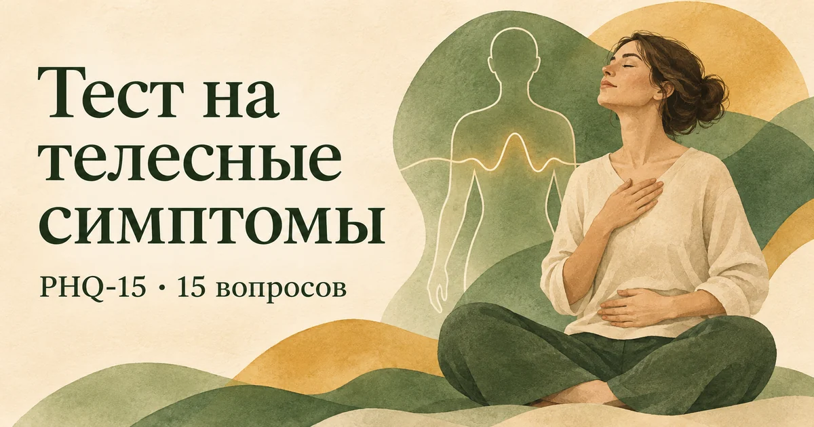

Главная → Тесты → Тест на телесные симптомы
Тест на телесные симптомы (PHQ-15)
Обновлено: 14.11.2026 · 4 минуты на прохождение
PHQ-15 помогает оценить, насколько вас беспокоили телесные симптомы: боль, головокружение, дискомфорт в животе, усталость и другие ощущения. В первых 13 вопросах речь о последних четырёх неделях, в двух последних — о сне и усталости за две недели. Результат от 0 до 30 баллов появится сразу. Ответы остаются в браузере. Шкала не определяет причину симптомов и не заменяет осмотр врача. Если вопрос о менструации к вам не относится, выберите соответствующий вариант.

Что с этим делать дальше. Балл — не диагноз, а точка отсчёта: смысл он приобретает в динамике, когда видно, растёт он или падает. В приложении AI Therapist есть дневник состояния, упражнения на основе приёмов КПТ и разговор с ИИ-психологом — можно пройти шкалу повторно через пару недель и сравнить.
Что показывает PHQ-15
Когда болит спина, колотится сердце или не хватает сил, хочется понять причину. PHQ-15 отвечает на более узкий вопрос: сколько телесных симптомов вас беспокоило и насколько сильно. Он не говорит, вызваны ли они заболеванием, стрессом, лекарствами или несколькими причинами сразу. Нельзя по высокому баллу объявить симптомы «психосоматикой».
В шкале 13 вопросов о физических ощущениях за последние четыре недели и два вопроса о сне и усталости за две недели. Первые оцениваются как «совсем не беспокоило», «немного» или «очень». У сна и усталости варианты относятся к частоте; ответ «почти каждый день» при подсчёте получает два балла, как и «более половины дней». Максимум — 30 баллов.
Если менструации к вам не относятся, выберите «Не относится ко мне»: этот пункт даст ноль баллов. Если симптом есть, но его причина уже известна, всё равно отвечайте по тому, насколько он беспокоил: тест измеряет нагрузку симптомов, а не ищет их происхождение.
Как понимать результат
| Баллы | Выраженность симптомов | Что делать |
|---|---|---|
| 0–4 | Минимальная | Если один отдельный симптом новый или тревожный, всё равно обсудите его с врачом. |
| 5–9 | Низкая | Понаблюдайте, что повторяется и мешает обычным делам; при необходимости обратитесь к терапевту. |
| 10–14 | Средняя | Запланируйте медицинскую оценку, особенно если симптомы сохраняются или усиливаются. |
| 15–30 | Высокая | Обратитесь к врачу: выраженная нагрузка симптомов заслуживает очной оценки независимо от причины. |
Эти диапазоны описывают общую нагрузку симптомов, а не риск конкретной болезни. Один сильный симптом может потребовать внимания даже при общей сумме 2 балла. И наоборот, высокий балл сам по себе не подтверждает тяжёлого заболевания.
Когда не ждать результата теста
Если у вас появилась сильная или непривычная боль в груди, выраженная одышка, обморок, внезапная слабость или нарушение речи, нужна срочная медицинская помощь. В России для вызова экстренных служб можно набрать 112. При новых, нарастающих или долго не проходящих симптомах запишитесь к врачу, даже если сумма баллов невысока.
На приёме полезно рассказать не только о балле, но и о конкретных ощущениях: где и когда они возникают, сколько длятся, что с ними происходит со временем, какие лекарства вы принимаете и что уже проверяли. Если симптомы повторяются на фоне тревоги, эта связь тоже важна, но сама по себе не отменяет медицинской проверки.
Если обследование не нашло ясной причины
«Анализы в норме» не означает, что вы выдумали ощущения. Симптомы реальны, а объяснение не всегда находится сразу. Следующий шаг — вместе с врачом решить, нужно ли наблюдение или дополнительное обследование, и параллельно посмотреть, как сон, нагрузка, тревога и внимание к телу влияют на самочувствие. Подробнее об этом — в статье о психосоматике.
Если вы часто проверяете пульс, ищете симптомы в интернете и на время успокаиваетесь после заверений врача, может быть полезна статья о тревоге за здоровье. А если телесные ощущения связаны с приступами сильного страха, посмотрите материал о панических атаках. Ни одна из этих ссылок не заменяет медицинскую оценку новых симптомов.
Что полезно записать перед консультацией
Если симптом трудно описать на приёме, сделайте короткую запись один раз, когда он возникнет. Например: «во вторник после обеда — тяжесть в животе, около двадцати минут; до этого почти не ел; стало легче после отдыха». Врачу обычно полезнее конкретное описание времени, места, длительности и обстоятельств, чем попытка заранее угадать диагноз. Отметьте также, мешал ли симптом работать, спать или выходить из дома.
Необязательно измерять пульс и давление каждый час или вести подробный дневник всех ощущений. Если врач назначил измерения, следуйте его плану. Если записывание само превращается в бесконечную проверку и усиливает тревогу, ограничьтесь несколькими фактами для приёма. Это особенно важно, когда беспокойство за здоровье заставляет постоянно искать подтверждение, что «всё точно нормально».
При повторяющихся симптомах запишите, какие исследования уже были и что сказал врач. Это поможет обсуждать следующий шаг предметно, а не начинать историю заново на каждом приёме. Если нашли связь с напряжённым периодом, расскажите и об этом: сон, стресс и физическое самочувствие влияют друг на друга. Такая связь не означает, что дальнейшее обследование запрещено или что симптом «только в голове».
Можно ли пройти тест повторно
Да, когда пройдёт достаточно времени, чтобы сравнить похожие периоды. Учитывайте, что большинство вопросов PHQ-15 охватывает четыре недели: повтор через несколько дней почти не покажет изменений. Если вы лечитесь, согласуйте с врачом, какие симптомы и когда удобнее отслеживать. Снижение балла может быть обнадёживающим, но важнее, как меняется ваша повседневная жизнь.
Если медицинские причины уже проверены, а ощущения продолжают тревожить, можно разобрать, что происходит с вами в моменты ухудшения: какие мысли, обстоятельства и чувства возникают рядом с симптомами. AI Therapist поможет начать такой разговор. При новых или усиливающихся симптомах сначала обратитесь к врачу.
Частые вопросы
PHQ-15 показывает психосоматику?
Нет. Шкала показывает выраженность телесных симптомов, но не определяет их причины. Симптомы могут быть связаны с физическим заболеванием, стрессом, лекарствами или сочетанием факторов.
Какие баллы считаются высокими?
От 15 до 30 баллов — высокая нагрузка симптомов. Диапазоны 0–4, 5–9 и 10–14 соответствуют минимальной, низкой и средней нагрузке. Даже низкий общий балл не отменяет необходимости проверить новый или сильный отдельный симптом.
Почему у последних вопросов другие ответы?
В оригинальном PHQ-15 первые 13 симптомов оценивают по тому, насколько они беспокоили за четыре недели. Сон и усталость оценивают по частоте за две недели; ответ «почти каждый день» в сумме PHQ-15 равен двум баллам.
Что делать, если вопрос о менструации ко мне не относится?
Выберите «Не относится ко мне». Этот ответ даёт ноль баллов и позволяет завершить тест без предположений о вашем опыте.
Отправляются ли мои ответы на сервер?
Нет. Подсчёт проходит в браузере, регистрация не нужна, ответы не сохраняются на сайте.
Материал подготовлен командой AI Therapist по открытой шкале PHQ-15. Мы сохранили 15 пунктов, разные периоды оценки и правило подсчёта двух последних вопросов. Сайт не ставит диагноз и не определяет причину телесных симптомов. При новых, сильных или нарастающих симптомах обратитесь за медицинской помощью.
Источники: Официальная русская форма Patient Health Questionnaire (PHQ), Kroenke K. и соавт., оригинальная публикация PHQ-15, 2002, APA, подсчёт и диапазоны PHQ-15.
Кто отвечает за содержание сайта и по каким правилам мы готовим материалы — на странице о проекте.